Fun Projects for your LEGO� MINDSTORMS� NXT!
|
|
Fun Projects for your LEGO� MINDSTORMS� NXT! |
| Multi-Bot Vehicle Variations |
|

Here are instructions for a few modifications you can make to the Multi-Bot vehicle:
Changing Batteries
Changing from Wheels to Treads
Changing Gears
| In addition to accepting the NXT with either AA batteries or the NXT Rechargeable Battery Pack, Multi-Bot has an additional design feature that makes it easy to change the batteries if using AA batteries. |
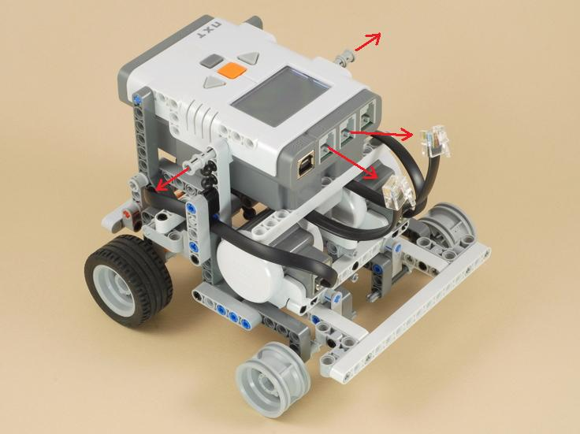
| To change batteries, simply unplug the motor wires from the NXT and pull out the gray pushed pegs from the front sides of the NXT as shown above, then you can pull the NXT brick up and it will pivot back to allow access to the batteries as shown below. |
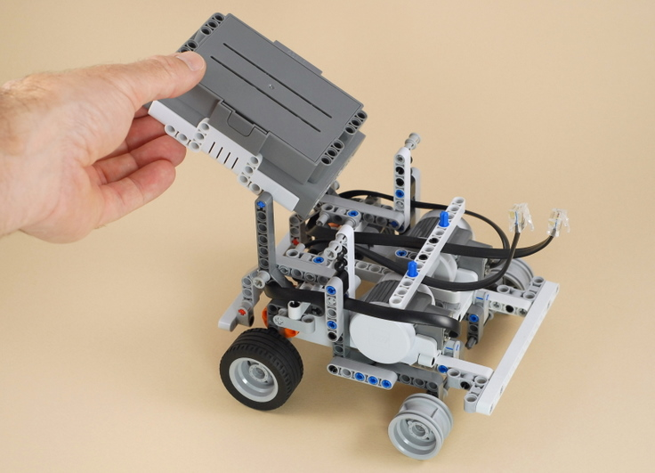
| Multi-Bot is designed to use either the wheels or the treads that come with the NXT 2.0 kit, and you can easily change between them. Multi-Bot's front axles include a feature that allows you to adjust them up and down to keep the robot level to the ground when changing from wheels to treads. Instructions to convert from wheels to treads are shown below. You can reverse this process to convert back to wheels. |
| First turn the robot upside down to make it easier to work on, as shown below. |
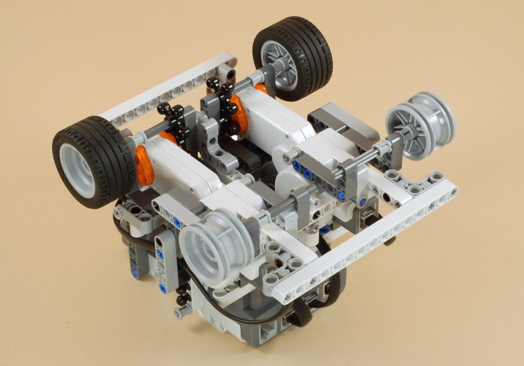
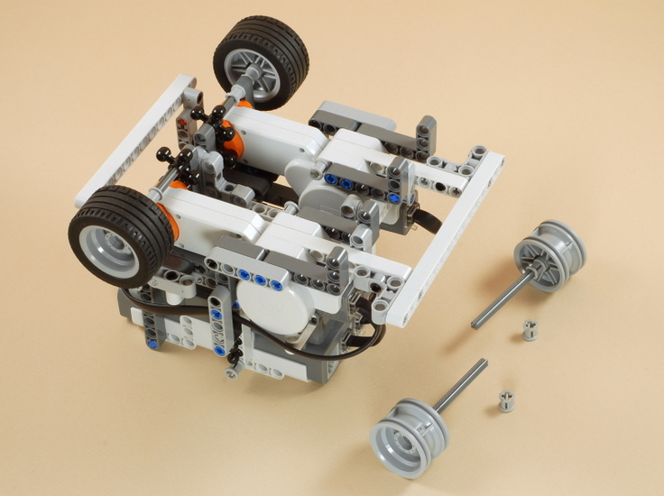
| Remove the front axles and the inner bushings as shown above, then re-install the front axles one hole higher (towards the NXT brick) as shown below. |
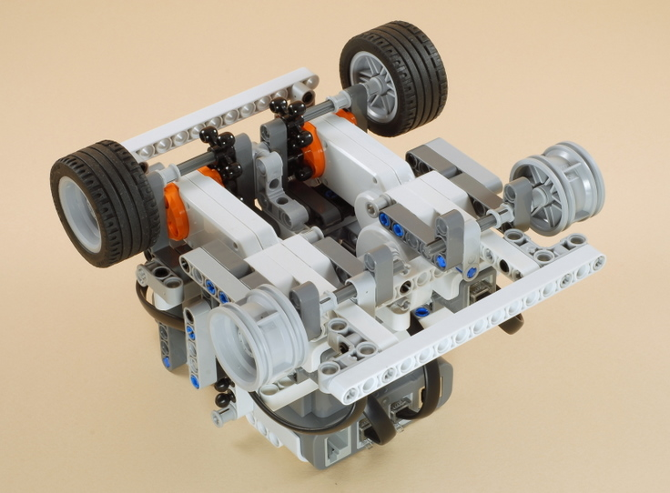
| Remove the tires from the rear wheels and then install the treads. |
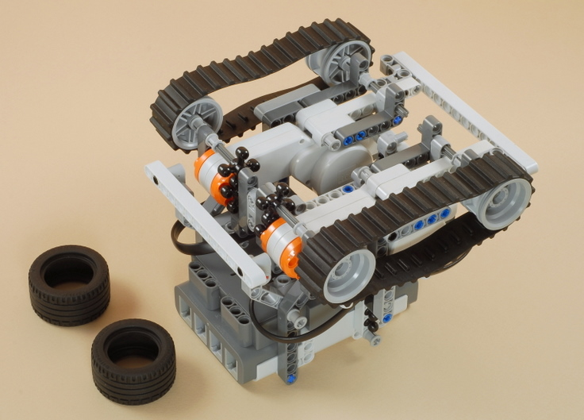
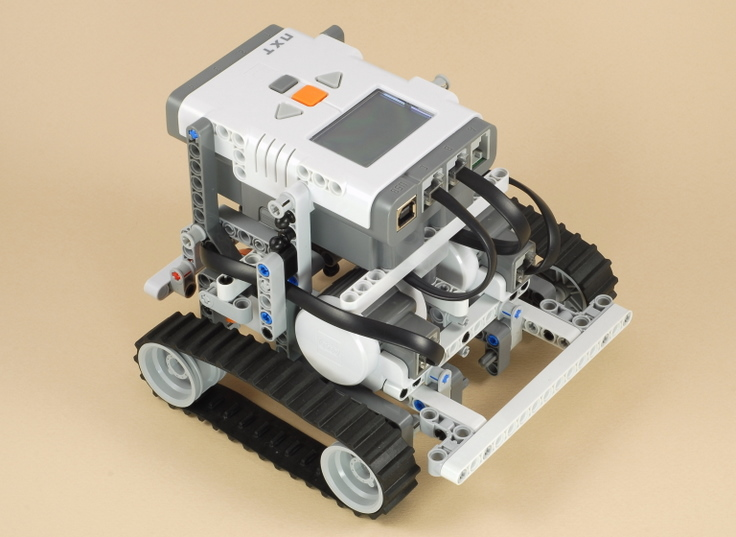
| The four "knob wheels" in the back of Multi-Bot are used as gears to allow the vehicle to have better ground clearance (when driving with treads in carpet, for example). You can also change the types of gears used to modify the speed and power of the vehicle. |
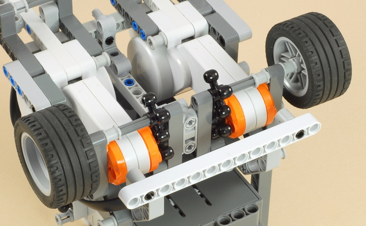
| To get a different gear ratio than the 1:1 ratio provided by the knob wheel gears, you can use the 12-tooth and 20-tooth gears pictured below. Depending on how you mount them, you can get a 5:3 gear ratio, or a 3:5 ratio. |
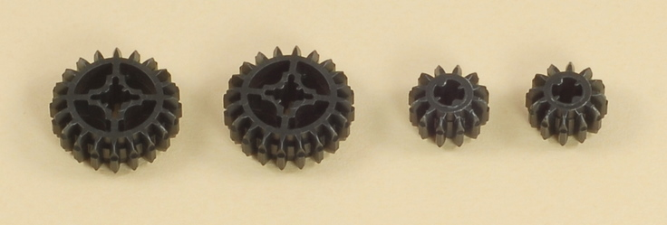
| Pictured below are the 12-tooth and 20-tooth gears installed for a 3:5 gear ratio, which will make the vehicle go about 60% faster than the 1:1 ratio. |
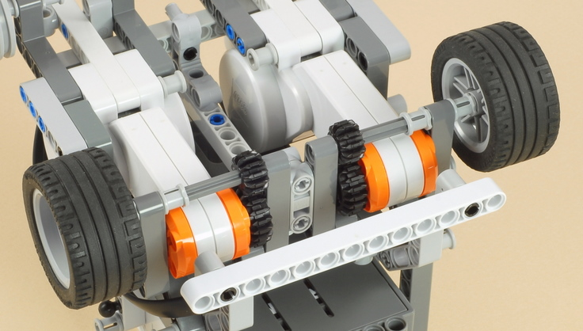
| Pictured below are the 12-tooth and 20-tooth gears installed for a 5:3 gear ratio, which will make the vehicle go about 40% slower than the 1:1 ratio. |
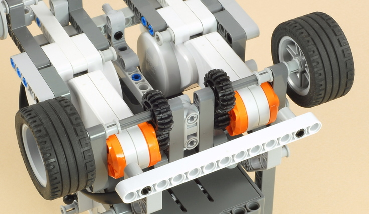
| To use different gears, you can always rebuild Multi-Bot and substitute the appropriate gears when required. It is also possible (but a little challenging) to change the gears in the completed vehicle without taking it all apart, as shown below. |
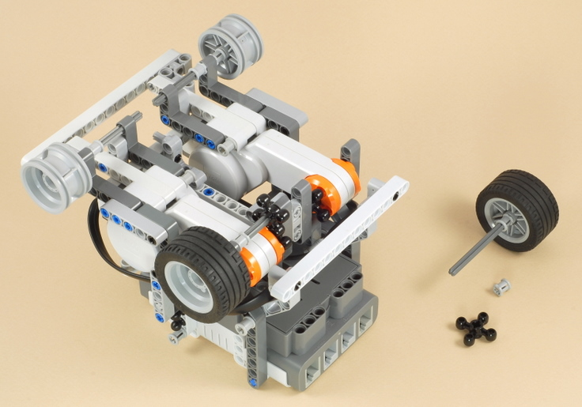
| Removing the gears that are attached to the wheel
axles is easy. Simply pulling a rear wheel off will pull the axle
out and drop the wheel gear and a bushing, as shown above. Start
by doing this on both sides. Removing the two gears that are attached to the motor axles is much trickier, because they are mounted on size 6 axles that are hidden within the rear structure of the robot. To do this, you can use the long size 12 axle from the NXT kit as a tool to push the size 6 axles out, as shown below. |

| Insert the size 12 axle in the outside beam hole that lines up with the motor and has the end of the motor axle just visible inside it, as shown above. Now by holding firmly onto the vehicle and pushing the size 12 axle into and through the motors, the size 6 axles can be pushed out the other side, as shown below. You will need to rotate the size 12-axle until you feel it line up with the axle holes that it needs to go through. |
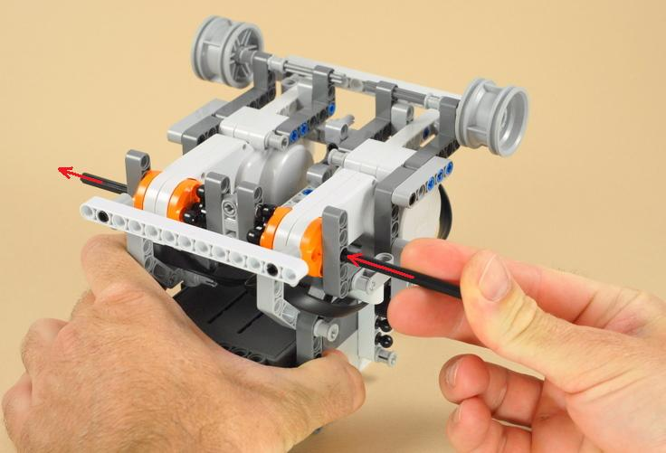
| When the first size 6 axle comes out, you can remove it as shown below. |
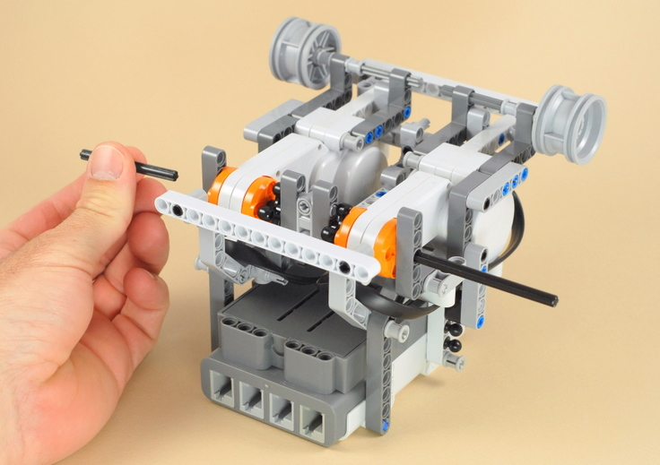
| After the first size 6 axle comes out, you need to keep pushing until the other size 6 axle also comes out far enough to grab and remove. Be careful not to push the size 12-axle too far in, or it will be hard to remove (if you do, you can remove it by pushing another long axle such as a size 9 axle back through the other side). |
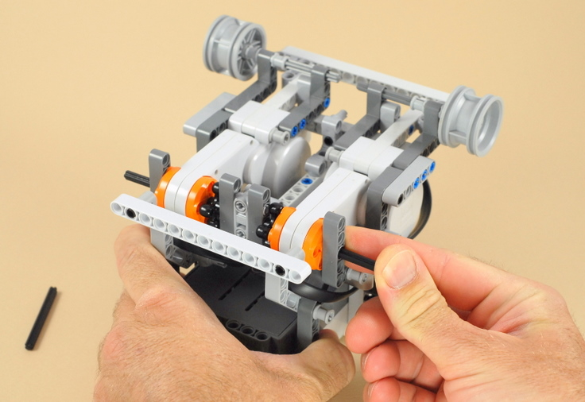
| When the second size 6 axle comes out far enough to grab and remove, remove it. If you have trouble gripping the axles with your fingers, you can use something like a thick rubber band to get a much better grip, as shown below. |
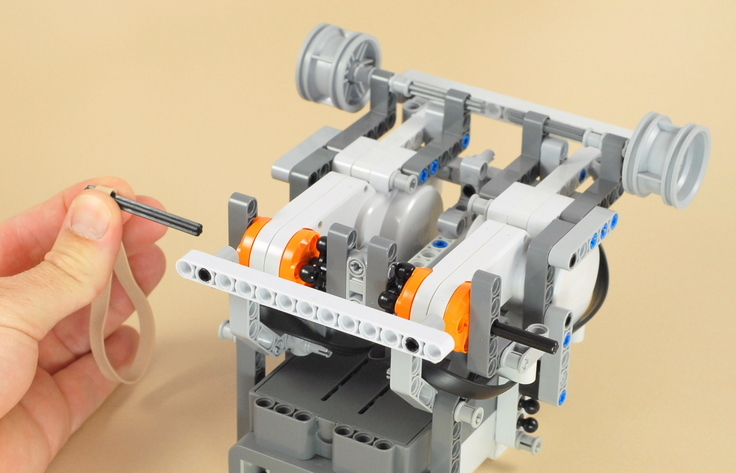
| Now grip the size 12-axle and pull it back out, using a rubber band for grip if necessary, as shown below. |
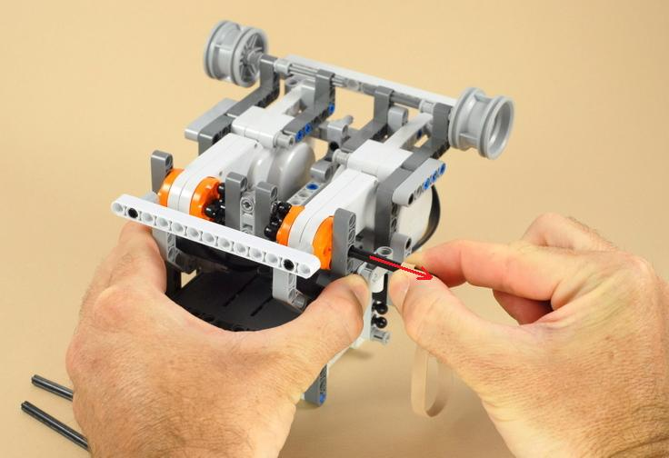
| When the size 12 axle comes out, the two motor gears should drop off. |
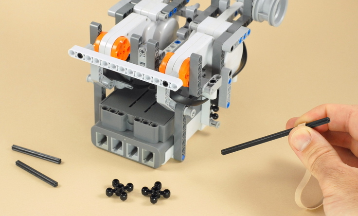
| To install the new gears, you need to install the motor gears first, which are attached using the size 6 axles hidden in the structure of vehicle. Hold the first motor gear in place centered on the inside of the motor rotor, and slide the size 6 axle in from the outside as shown below. You will need to rotate the gear until it lines up with the axle after the axle pushes through the motor. |
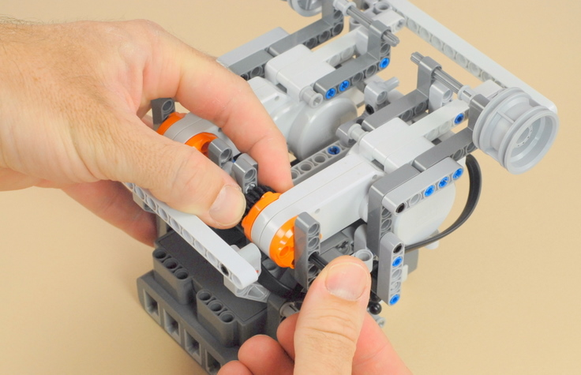
| After installing one new motor gear with one of the size 6-axles, the end of the size 6-axle should be flush with the outside of the angled beam on the outside of the motor, as shown below. Repeat this for the motor gear on the other side. |
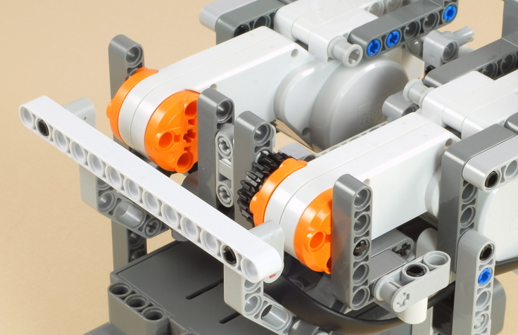
| After installing new gears on the two motor axles on
both sides, installing the new gears on the wheel axles is easy.
Simply slide a wheel axle in from the outside, placing first a bushing
on it, then the gear, then arranging the parts as shown below.
Important: When pushing on the wheel axles, make sure the axle stop stays pushed all the way into the wheel hub on the outside of the wheel. The wheel axles must make it all the way into and through the angled beams on the inside of the gears as shown below. |
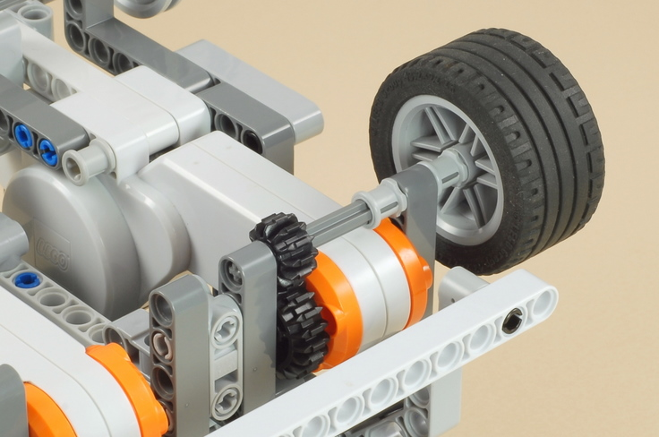
|
Copyright
�
2007-2010 by Dave Parker. All rights reserved. |